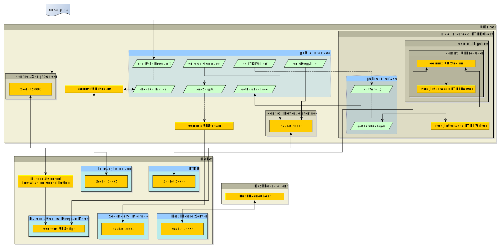

Library architecture
The image below shows a rough architecture overview that should help developers to use the different modules present in this library. Note that this is an incomplete view on the classes involved.
{kind=link}
The core of this library is the UrDriver class which creates a
fully functioning robot interface. For details on how to use it, please see the
Example driver section.
The UrDriver’s modules will be explained in the following.
RTDEClient
The RTDEClient class serves as a standalone
RTDE
client. To use the RTDE-Client, you’ll have to initialize and start it separately:
rtde_interface::RTDEClient my_client(ROBOT_IP, notifier, OUTPUT_RECIPE, INPUT_RECIPE);
my_client.init();
my_client.start();
while (true)
{
std::unique_ptr<rtde_interface::DataPackage> data_pkg = my_client.getDataPackage(READ_TIMEOUT);
if (data_pkg)
{
std::cout << data_pkg->toString() << std::endl;
}
}
Upon construction, two recipe files have to be given, one for the RTDE inputs, one for the RTDE outputs. Please refer to the RTDE guide on which elements are available.
Inside the RTDEclient data is received in a separate thread, parsed by the RTDEParser and
added to a pipeline queue.
Right after calling my_client.start(), it should be made sure to read the buffer from the
RTDEClient by calling getDataPackage() frequently. The Client’s queue can only contain 1
item at a time, so a Pipeline producer overflowed! error will be raised if the buffer isn’t read
before the next package arrives.
For writing data to the RTDE interface, use the RTDEWriter member of the RTDEClient. It can be
retrieved by calling getWriter() method. The RTDEWriter provides convenience methods to write
all data available at the RTDE interface. Make sure that the required keys are configured inside the
input recipe, as otherwise the send-methods will return false if the data field is not setup in
the recipe.
An example of a standalone RTDE-client can be found in the examples subfolder. To run it make
sure to
have an instance of a robot controller / URSim running at the configured IP address (or adapt the address to your needs)
run it from the package’s main folder, as for simplicity reasons it doesn’t use any sophisticated method to locate the required files.
RTDEWriter
The RTDEWriter class provides an interface to write data to the RTDE interface. Data fields that
should be written have to be defined inside the INPUT_RECIPE as noted above.
The class offers specific methods for every RTDE input possible to write.
Data is sent asynchronously to the RTDE interface.
ReverseInterface
The ReverseInterface opens a TCP port on which a custom protocol is implemented between the
robot and the control PC. The port can be specified in the class constructor.
It’s basic functionality is to send a vector of floating point data together with a mode. It is
meant to send joint positions or velocities together with a mode that tells the robot how to
interpret those values (e.g. SERVOJ, SPEEDJ). Therefore, this interface can be used to do
motion command streaming to the robot.
In order to use this class in an application together with a robot, make sure that a corresponding URScript is running on the robot that can interpret the commands sent. See this example script for reference.
Also see the ScriptSender for a way to define the corresponding URScript on the control PC and sending it to the robot upon request.
ScriptSender
The ScriptSender class opens a tcp socket on the remote PC whose single purpose it is to answer
with a URScript code snippet on a “request_program” request. The script code itself has to be
given to the class constructor.
Use this class in conjunction with the External Control URCap which will make the corresponding request when starting a program on the robot that contains the External Control program node. In order to work properly, make sure that the IP address and script sender port are configured correctly on the robot.
Other public interface functions
This section shall explain the public interface functions that haven’t been covered above
check_calibration()
This function opens a connection to the primary interface where it will receive a calibration information as the first message. The checksum from this calibration info is compared to the one given to this function. Connection to the primary interface is dropped afterwards.
sendScript()
This function sends given URScript code directly to the secondary interface. The
sendRobotProgram() function is a special case that will send the script code given in the
RTDEClient constructor.
DashboardClient
The DashboardClient wraps the calls on the Dashboard server
directly into C++ functions.
After connecting to the dashboard server by using the connect() function, dashboard calls can be
sent using the sendAndReceive() function. Answers from the dashboard server will be returned as
string from this function. If no answer is received, a UrException is thrown.
Note: In order to make this more useful developers are expected to wrap this bare interface into something that checks the returned string for something that is expected. See the DashboardClientROS as an example.